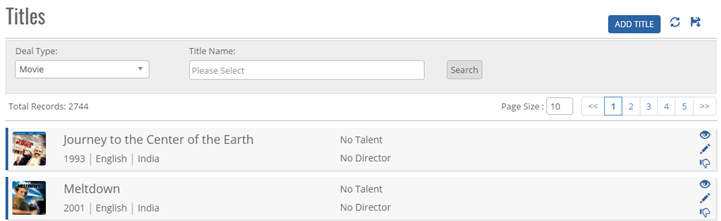
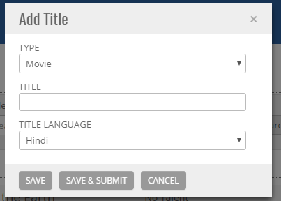
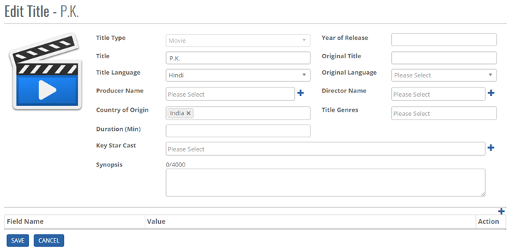
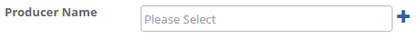
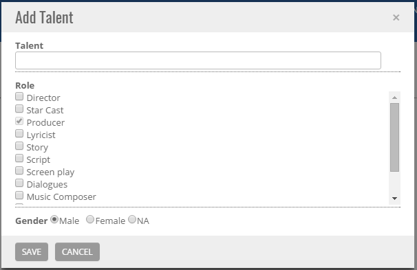
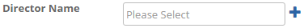
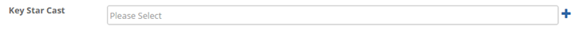
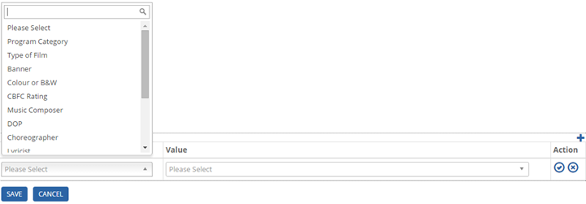
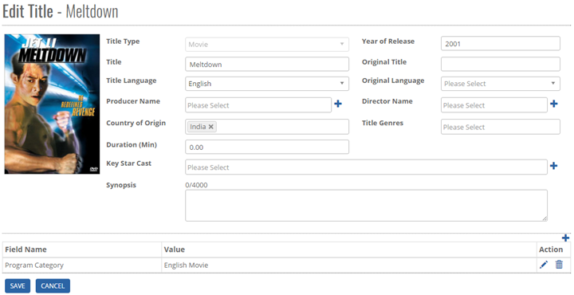
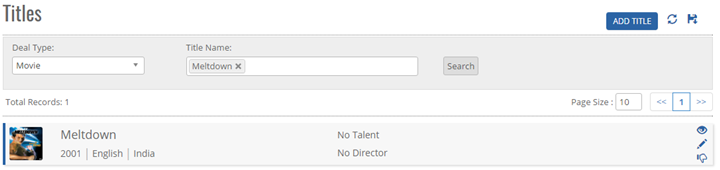


	<section>
		<article>
			<h2>Title List<span></span></h2>
			<div>
				<p></p>
				<p>This module will be accessible only to the user who have rights for this module. User can add, modify, view, deactivate/active the data in the system and it will be done by the user who has rights for individual action (add/modify/active/de active/view/release).</p>

				<p>This module is used to add titles of type Movie or Show into system which will be used later in Acquisition deal.</p>

				<p>Click on links Module  Title List which opens Title Collection list page with all added titles as below.</p>

				<div class="triangle-border top">				
					
				</div>

				<p><strong>Add New MOVIE</strong></p>
				<p>To add new title click on ‘Add’ button on the Title Collection page. Clicking on ‘Add’ button opens ‘Add Title Collection’ page like below to add new titles.</p>
				<div class="triangle-border top">
					
				</div>
				<p><strong>Title add screen will have following fields:</strong></p>

				<p><strong>Type:</strong> User can create title for either Movie/Program/Music. According to the selection, type of title will be added in the system.</p>
				<p><strong>Title:</strong> This is the name of title. </p>

				<p><strong>Title Language: </strong>Language of the title being added/edited. By default, Hindi is selected. Language Data is populated from Language Master.</p>

				<p>If user clicks on SAVE button, it will save the Title and will show on the list page. SAVE & SUBMIT will redirect user to the page below:</p>


				<div class="triangle-border top">
					
				</div>
				<p>Here user has the option to Upload the Title image along with following fields.</p>
				<p><strong>Original Title: </strong>This is original name of title. </p>
				<p><strong>Original Language:</strong> In case of dubbed title, original language is selected to denote the original language of the title. Language Data is populated from Language Master.</p>
				<p><strong>Producer Name:</strong> This shows list of producers added earlier. User can select more than one at a time.</p>
				<p><strong>Director Name:</strong> This shows list of directors added earlier. User can select more than one at a time.</p>
				<p><strong>Key Star Cast:</strong> This shows list of star cast added earlier. User can select more than one at a time.</p>
				<p><strong>Synopsis:</strong> This is synopsis of title if it has.</p>
				<p><strong>Country of Origin:</strong> By default, it is selected as India. It shows list of countries added earlier in Country Master. User can select more than one.</p>
				<p><strong>Title Genres:</strong> Shows list of genres added earlier in Genres Master. User can select more than one.</p>
				<p><strong>Year of Release:</strong> This is to enter year of release of this title.</p>
				<p><strong>Duration (Min):</strong> This is to enter the total duration in minutes.</p>
				<p><strong>SAVE:</strong> Clicking on save will save the Title in the system.</p>
				<p><strong>CANCEL:</strong> Clicking on <strong>Cancel</strong> is to cancel the add operations and goes back to previous window.</p>
				<p>Note:
					<ol type="1">
					  <li>The list box option can be searched by entering the initial letters.</li>
					  <li>"Title name" will be unique in the system irrespective of language and country.</li>
					</ol>
				</p>
				<p><strong>Add Producer</strong></p>
				<p>This facility is to add Producer into system directly from title master without going to Talent master so that the added entry will display in Producer Name dropdown to select.</p>
				<div class="triangle-border top">
					
				</div>

				<p>Click on <strong>"Add"</strong> to display the Add Talent window page as below.</p>
				<div class="triangle-border top">
					
				</div>
				<p><strong>Talent:</strong> Enter Talent name in the Textbox.</p>

				<p><strong>Role:</strong> By default Producer will be selected and multiple check box can be selected such as Star Cast and Singers.</p>

				<p><strong>Gender:</strong> Can select either Male or Female or NA through radio button.</p>
				 <p><strong>SAVE:</strong> Click <strong>Save</strong> button to save data to the database, an alert message appears as "Talent added successfully", click "OK" a new Talent added into the Talent master module as well as display in the current process.</p>
				 <p><strong>CANCEL:</strong> Click <strong>Cancel</strong> to cancel the add operations and previous window disappear and data should not saved.</p>
				 <p><strong>Add Director</strong></p>
				 <p>To add New Director in the system, click on “Add” button. It will open the same Add Talent pop up as in Producer and Director will be selected by default.</p>
				<div class="triangle-border top">
					
				</div>

				<p>Follow same process to add new Key Star Case in the system as shown in Producer.</p> 

				<p><strong>Add Key Star Cast</strong></p>

				<p>To add New Key Star Cast in the system, click on “Add” button. It will open the same Add Talent pop up as in Producer and Key Star Cast will be selected by default.</p>


				<div class="triangle-border top">
					
				</div>

				<p>Follow same process to add new Key Star Case in the system as shown in Producer.</p>
				<p><strong>Adding other info related to Title</strong></p>

				<div class="triangle-border top">
					
				</div>

				<p>System provides options to add Banner, CBFC Rating, Choreographer, DOP etc. Fields related to particular title.</p>

				<p>To add these entities, select appropriate Field Name and add corresponding Value to it.</p>

				<p>Click on Save to save the record and Cancel to cancel adding record.</p>

				<p><strong>Modify an existing TITLE COLLECTION</strong></p>

				<p>The user who has rights to edit can edit existing “Title Collection” record in the system. All the fields can be edited by the user which impact all its references in the system. Select any record in Title Collection list page and click on Edit button which opens Edit Title Collection page.</p>
				
				<p>It shows all the values in fields Title, Original Title, Synopsis, Director Name, Producer Name, Key Star Cast, Original Language, Country of Origin, etc. as added previously.</p>
				<div class="triangle-border top">
					
				</div>
				<p>Change the data in fields as required.</p>
				<p><strong>SAVE:</strong> Click Update to save the currently changed data for this title record.</p>
				<p><strong>CANCEL: </strong>Click <strong>Cancel</strong> to cancel the add operations and previous window will disappear and data should not be saved.</p>
				<p><strong>VIEW an existing TITLE COLLECTION</strong></p>
				<p>User assigned with the rights to view the page can only view the particular Title Collection.</p>
				<p><strong>Note:</strong> 1) User cannot perform any operation on Title Collection because it is present in non-editable mode (de active).</p>
				<p><strong>Cancel:</strong>  Click <strong>Cancel</strong> to cancel the view operation and goes to previous window.</p>
				<p><strong>To Search an existing TITLE COLECTION</strong></p>
				<p>User can search a particular Title Collection by typing the initial alphabets or full name of Title in the Title search text box on the Title page and there by clicking on Search button. The application will display a list of all Title Collection name whose initial alphabets or name match with the search criteria.</p>
				<p>Also Title type and Program Category can be used as an additional filter to search criteria.</p>
				<p>To view the list of all Title Collection, click on Show All button. Click Show All button will refresh search criteria and shows all records, Click Page no. System will navigate the desired page; per page 10 records will be show.</p>
				<div class="triangle-border top">
					
				</div>

				<p><strong>Export to Excel</strong></p>
				<p>Click on <strong>Export to Excel</strong> button. It will download all the records in the Excel Format.</p>
				<p><strong>Note: </strong>If user has searched for a particular title and then clicks on Export to Excel button, only searched title will get exported.</p>
			</div>
		</article>
	</section>
